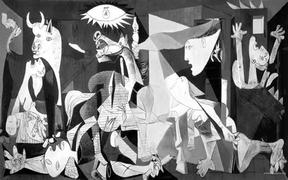

Thông tin tác phẩm
- Tác giả Pablo Picasso
- Năm sáng tác 1937
- Chất liệu Sơn dầu trên toan
- Kích thước 349 × 776 cm

“Hội họa không sinh ra để trang trí căn phòng,
mà là vũ khí chống lại kẻ thù.”
“Ngày 26 tháng 4 năm 1937, thị trấn Guernica của xứ Basque bị không quân Đức và Ý ném bom, gây thương vong lớn cho dân thường. Picasso đã biến nỗi đau ấy thành một bản cáo trạng bằng hình ảnh, phản đối chiến tranh và bạo lực.”